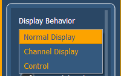
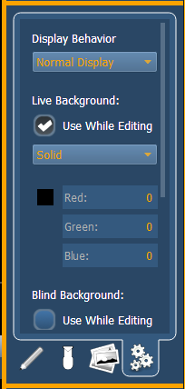
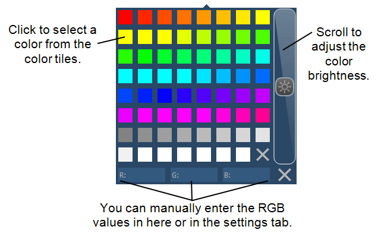
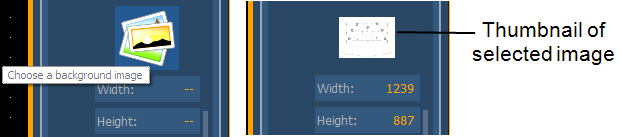

In the fourth tab, you can adjust the settings for the background. Three options are available for background types; you can either use a solid color, a gradient of two colors, or a image.

The following display behaviors are available:
You can select live and blind backgrounds for magic sheets. These backgrounds can either use a solid color, gradient of two colors, or an image. One of these backgrounds will be used when editing a magic sheet. Select the {Use While Editing} button to use either the live or blind background.

When solid is selected, you will have the chance to select a color for the magic sheet background. You can either click on the color square in the tab, which opens a color selection window, or you can manually enter the RGB values.

When gradient is selected, you will have the chance to select a two color gradient for the magic sheet background. You can either click on the color squares in the tab, which open a color selection window, or you can manually enter the RGB values.
With image selected, you can adjust the size, opacity, and invert the colors of the selected background image.
You can select or import an image directly from this tab by pressing the choose a background image icon, if no previous image had been chosen, or by pressing the thumbnail icon of the selected image to change it.
